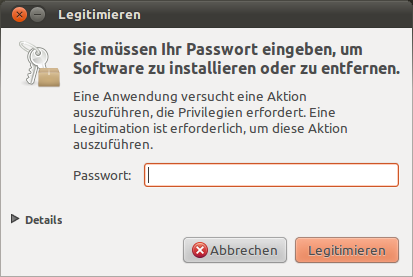

Grundlagen
Dieser Artikel soll in das neue System einführen. Er behandelt in aller Kürze einige wichtige Eigenschaften von Ubuntu, nennt wesentliche Unterschiede zu anderen Systemen und gibt Tipps zur ersten Orientierung und einfachen Bedienung.
Ubuntu, Kubuntu, Xubuntu, Lubuntu, etc.¶
Was Ubuntu eigentlich ausmacht, beschreibt ein eigener Artikel: Was ist Ubuntu? Die verschiedenen Varianten haben alle die gleiche Basis, unterscheiden sich aber in der vorinstallierten Software und ihren Ansprüchen an die Hardware. Die hier benutzte Reihenfolge entspricht grob den Hardware-Anforderungen, wobei Lubuntu die geringsten Anforderungen besitzt:
"Ubuntu" ist die ursprüngliche Variante, die mit hohem Komfort und einer auf einfache Bedienung ausgelegten Arbeitsumgebung daher kommt. Bis Ubuntu 10.10 wurde standardmäßig GNOME 2 als Desktop eingesetzt, ab Ubuntu 11.04 kommt Unity zum Einsatz.
"Ubuntu GNOME" mit der GNOME Shell füllt die Lücke, die mit dem Wechsel auf Unity entstanden ist und bietet eine aktuelle GNOME-3-Umgebung.
"Kubuntu" mit KDE legt besonderen Wert auf höchste Konfigurierbarkeit.
"Ubuntu MATE" mit MATE spricht insbesondere diejenigen an, die Ubuntu von früher her kennen und weder Unity noch der GNOME Shell etwas abgewinnen können.
"Xubuntu" mit Xfce liefert eine schnellere und schlankere Oberfläche, wobei der Hauptaugenmerk auf Konstanz, nicht auf ständigen Veränderungen liegt.
"Lubuntu" mit LXDE stellt ein einfaches und energiesparendes Desktop-System auch für ältere Hardware bereit.
Teilweise unterscheiden sich diese Umgebungen in der Bedienung, daher enthältt dieser Artikel am Ende Links zu weiteren Anleitungen für die verschiedenen Oberflächen. Diese Oberflächen können übrigens auch parallel installiert sein, auch wenn sich Fortgeschrittene in der Regel für eine entscheiden - die Basis ist immer die Gleiche.
Sicherheit¶
Ubuntu ist technisch gesehen ein sehr sicheres System, wenn man die oben erwähnten Sicherheitsupdates regelmäßig installiert und einige Regeln einhält. Die größte potentielle Schwachstelle ist der Benutzer! Die wichtigsten Grundregeln sicherheitsbewussten Verhaltens stehen im Sicherheits-Einmaleins.
Benutzer, Rechte, Sicherheit¶
Bei Linux können mehrere Benutzer gleichzeitig und unabhängig an einem einzigen System arbeiten: Linux ist ein "Mehrbenutzersystem". Diese Benutzer können sich nicht gegenseitig in die Quere kommen und sind auch vom System selbst abgeschottet: sie dürfen nicht einfach das ganze System, sondern nur ihre eigenen Dateien und Einstellungen verändern. Das ist auch für gewöhnliche PCs mit nur einem Bildschirm und einer Tastatur bedeutsam: die Abschottung der Benutzer voneinander und vom System führt dazu, dass das System sicherer wird, weil niemand versehentlich oder böswillig in Bereichen herum pfuschen kann, in denen er nichts zu suchen hat. So könnte ein Programm wie der Webbrowser Firefox, von einem gewöhnlichen Benutzer ausgeführt, niemals einfach irgendwelche Software im System verankern.
Auch Windows kennt verschiedene Benutzerkennungen und eingeschränkte Rechte. Allerdings war es dort lange Zeit üblich, mit vollen Administrator-Rechten zu arbeiten. Dies ist bei Linux weder üblich noch zu empfehlen. Der bei der Installation angelegte Benutzer hat die Möglichkeit, sich alle nötigen Rechte durch Eingabe seines eigenen Passworts vorübergehend zu verschaffen - aber ansonsten arbeitet er wie alle anderen Benutzer auch mit eingeschränkten Rechten. Bevor man also beispielsweise ein neues Programm installieren kann, muss man sich mit seinem Passwort ausweisen:

Experten-Info:
Unter Ubuntu hat der Benutzer root kein Passwort, eine Anmeldung als root ist daher nicht möglich. Ubuntu verwendet statt dessen sudo. Die Vergabe eines Root-Passworts wird gelegentlich empfohlen, ist jedoch nur in den seltensten Fällen sinnvoll und erfordert im Gegenteil zusätzlichen Konfigurationsaufwand.
Hintergrund: Benutzer, Gruppen und Zugriffsrechte¶
Dieser Abschnitt ist zum weiteren Verständnis nicht zwingend notwendig.
Jeder Benutzer hat eine eindeutige Kennung (den Benutzernamen) und ist Mitglied in einer oder mehreren Gruppen.
Jede Datei hat genau einen Eigentümer und ist genau einer Gruppe zugeordnet.
Berechtigungen werden auf drei Ebenen festgelegt:
Die Berechtigungen für den Eigentümer betreffen nur den Eigentümer der Datei selbst, also genau einen Benutzer.
Die Berechtigungen für die Gruppe gelten für alle Benutzer, die Mitglied dieser Gruppe sind.
Die Berechtigungen für "Andere" gelten für... genau, alle anderen, die weder Eigentümer der Datei noch Mitglied der Gruppe sind.
Praktische Beispiele, wie man die Rechte an Dateien ändern und Benutzer verschiedenen Gruppen zuordnen kann, erfährt man in den Artikeln Benutzer und Gruppen und Rechte.
Achtung!
Windows-Umsteiger: Unter Linux ist es üblich, dass die Daten einzelner Benutzer von anderen zwar nicht verändert, aber gelesen werden dürfen. Wer dies nicht möchte, findet im Artikel Homeverzeichnis Tipps, wie der Zugriff schnell und effektiv begrenzt werden kann.
Datenverwaltung¶
Linux-Systeme wie Ubuntu sind von vorne herein auf Mehrbenutzer-Betrieb in einem Netzwerk ausgelegt. Daher ist die Verwaltung von Daten (also die geordnete Ablage und der Zugriff auf Dateien und Verzeichnisse) unter Ubuntu recht komplex und stellt für viele Einsteiger oder Umsteiger von anderen Betriebssystemen am Anfang eine gewisse Hürde dar. Diese lässt sich aber leicht überwinden, indem man sich die Regeln und Prinzipien der Datenverwaltung unter Linux/Ubuntu etwas genauer anschaut und ein tieferes Verständnis für den Zusammenhang von "Geräten", "Datenträgern" und "Dateisystemen" entwickelt.
Der Artikel Datenverwaltung bietet dazu eine Einführung und erklärt grundlegende Zusammenhänge, deren Verständnis bei der Lösung vieler Einsteigerprobleme hilfreich sein kann.
Laufwerke¶
Buchstaben? Wozu Buchstaben?¶
Unter Linux gibt es keine Laufwerksbuchstaben für Datenträger. Statt dessen können Partitionen (Laufwerke) auf Speichermedien wie Festplatten oder CD-ROMs, aber auch Netzlaufwerke an beliebiger Stelle in die große Verzeichnisstruktur eingebunden werden. Wechseldatenträger bindet Ubuntu automatisch unterhalb des Verzeichnisses /media ein. sie erscheinen dann automatisch als Symbol an zentraler Stelle innerhalb der Arbeitsfläche. Die "Eigene Dateien", unter Linux das sog. Homeverzeichnis, werden unter /home in die Verzeichnisstruktur eingebunden.
Der Vorteil dieses Verzichts auf Laufwerkbuchstaben liegt in der Trennung zwischen logischer und physischer Datenstruktur. Dazu ein Beispiel zur Veranschaulichung: angenommen, man hat ein Ubuntu mit nur einer Festplatte und diese wird zu klein, dann benötigt man eine zweite Platte. Das Basissystem soll weiterhin auf der alten, ausreichenden Platte belassen und nur die eigenen Daten sollen auf die neue Platte ausgelagert werden. Man teilt dazu dem System einfach mit, dass /home nun auf der zweiten statt der ersten Platte liegt, kopiert die Original-Daten dorthin, ändert eine Steuerdatei (/etc/fstab) und fertig. Die Anwendungen merken in diesem Fall von dem Umstieg nichts, weil sich kein einziger Pfad für die Datenverwaltung ändert, es bleibt bei /home - die Anwendungsprogramme müssen nicht auf den neuen Laufwerksbuchstaben geändert werden.
Wechselmedien entfernen¶
Es ist ziemlich ungünstig z.B. eine CD herauszunehmen, solange noch ein Programm darauf zugreift, daher verriegelt Linux die Schublade eingebundener CD-ROMs. Ein Nachteil: ältere Laufwerke signalisieren dem System nicht ihren Status (offen/geschlossen) sobald man den Auswurfknopf betätigt, Linux erfährt also nichts davon, und die Lade bleibt zu. Diese Laufwerke kann man nur öffnen, indem man mit der rechten Maustaste auf das Laufwerkssymbol klickt und "Auswerfen" wählt.
Speichersticks und externe Festplatten sollte man niemals einfach abziehen, da ein Schreibvorgang noch nicht abgeschlossen sein könnte und Datenverlust droht. Wie alle externen Geräte sollte man diese immer über "Auswerfen" ( ) sicher entfernen. Ein Fenster mit einem Fortschrittsbalken zeigt an, wann der Datenträger sicher entnommen werden kann.
) sicher entfernen. Ein Fenster mit einem Fortschrittsbalken zeigt an, wann der Datenträger sicher entnommen werden kann.
Homeverzeichnis¶
Das Homeverzeichnis ist der Ort, an dem Benutzer ihre Daten ablegen können (Eigene Dateien). Programme hinterlegen dort, in sog. versteckten (ausgeblendeten) Verzeichnissen, ebenfalls die benutzerspezifischen Einstellungen. Hier hat der einzelne Benutzer volle Schreib- und Leserechte, nur hier sollten Benutzer ihre Daten ablegen. Weitere Informationen hierzu findet man im Wiki unter Homeverzeichnis.
Programme starten¶
Ähnliche wie in anderen Betriebssystemen startet man Programme normalerweise über ein Startmenü, was sich irgendwo im Panel befindet (Ubuntu meist links oben oder unten). In einigen Fällen trägt dort eine Programminstallation keinen Starter ein, nicht schlimm, Linux kennt mehrere Wege um Programme zu starten, siehe dazu Programme starten.
Programme installieren¶
Die Softwareverwaltung ist einer der Bereiche, der unter Ubuntu unendlich viel einfacher gestaltet ist als unter den meisten anderen Systemen. Wie man zahlreiche Anwendungen findet und installieren kann, erklärt der Artikel Anwendungen hinzufügen. Die technischen Hintergründe erklärt die Artikelsammlung Paketverwaltung. Um systemnahe Software und Werkzeuge ohne graphische Oberfläche zu installieren, empfiehlt sich der Hauptartikel Pakete installieren und unter Paketverwaltung/Problembehebung gibt es Tipps wenn es mal klemmt.
Programme entfernen¶
Um nicht mehr benötigte Programme wieder zu entfernen kommen die selben Werkzeuge zum Einsatz, die auch für die Installation genutzt werden: Anwendungen hinzufügen
Speicherbedarf¶
Manche aufmerksamen Umsteiger wundern sich über die Tatsache, dass der Arbeitsspeicher unter Linux immer nach kurzer Zeit randvoll ist. Das ist kein Problem, im Gegenteil - wozu ist Speicher gut, wenn man ihn nicht benutzt? Linux verwendet ihn, um Inhalte der Festplatte zwischenzuspeichern und so Zugriffe wesentlich zu beschleunigen. Wird der Speicher anderweitig benötigt, ist er blitzschnell wieder freigegeben. Ubuntu bringt sogar standardmäßig das Prüfprogramm memtest mit.
Auslagerungsspeicher (Swap)¶
Bei der Ubuntu-Installation wird standardmäßig eine Partition Auslagerungsspeicher (engl. Swap) angelegt. Dieser dient praktisch als erweiterte Reserve für den Arbeitsspeicher, hat in den letzten Jahren aber seine Bedeutung wegen der gewachsenen Arbeitsspeicher größtenteils verloren. Gebraucht wird der Auslagerungsspeicher allerdings immer noch für den Ruhezustand, weil der Arbeitsspeicher ohne Strom nichts speichern kann. Wird der Rechner in den Ruhezustand versetzt, wird der Inhalt des Arbeitsspeicher in den Auslagerungsspeicher kopiert und beim nächsten Start von dort zurückgeholt.
Terminal¶
Nun sind wir bei dem Thema angelangt, das Umsteiger oft am meisten schreckt: das Terminal oder auch oft Shell genannt. Dieses ermöglicht die text- bzw. kommandozeilenbasierte Benutzung des Computersystems und das viel schneller als über eine Menüstruktur.
Wer sich nicht ausdrücklich dafür interessiert, kann das Terminal im Alltag vollkommen ignorieren. Es gibt aber Fälle in denen ein Terminal ein mächtiges, schnelles und oft auch sicheres Werkzeug darstellt, z.B.:
Wenn widerspenstige Hardware eingerichtet werden soll
Wenn etwas repariert werden muss, z.B. bei einer nicht startenden grafischen Oberfläche
Wenn man Hilfe im Forum anfordert, also Systeminformationen austauschen muss
In vielen Fällen findet man auch Anleitungen, in denen ein genau einzugebender Befehl angegeben wird. Das ist z.B. in unserem Forum der Fall. Es ist deutlich effektiver einen vorgegebenen Befehl zu kopieren und im eigenen Terminal auszuführen, als ein: klicke mal da - wie sieht das aus? - Ach Du benutzt Kubuntu, dann sollte das dort zu finden sein - klicke dort - öffne das Menü - suche Erweitert - jetzt mit der rechten Maustaste ... Die Vorteile des Terminals sind ganz einfach:
Unter der Haube liegt das gleiche Linux-System und man kann immer mit den gleichen Befehlen arbeiten
Sehr oft braucht ein Befehl nur kopiert und eingefügt werden (Copy&Paste). Nur in seltenen Fällen muss man kleine Anpassungen vornehmen.
Schreib- und Lesefehler werden vermieden (Copy&Paste).
Es geht sehr schnell.
Ausgabeergebnisse (z.B. Ablauffehler o.ä.) können in einer Datei zwischengespeichert werden
Alle nötigen Informationen können im Forum als Codeblock zwischen den Erklärungstexten an zentral einsehbarer Stelle eingefügt werden
Es braucht kein Bild bzw. ein Bildschirmfoto hochgeladen werden, denn nicht nur das Anschauen, sondern bereits das Anhängen erfordert zusätzlichen Aufwand, den man sich sparen kann.
Wie man das Terminal öffnet und sich in den meisten Fällen auch noch die fehlerträchtige Arbeit des Abtippens ersparen kann, steht im Wiki unter Terminal. Die Übersichtsseite zur Shell ermöglicht weitere Einblicke, wie z.B. eine kurze Einführung in die Shell, eine Befehlsübersicht mit Erklärungen, wie man Terminalausgaben umleiten kann und abschließend ein Skripting-Guide für Anfänger, um sich an eigenen Skripten zu versuchen.
Übrigens: mit DOS hat das Terminal außer dem Aussehen absolut nichts zu tun. Auch im Terminal können zahllose Nutzer und Programme parallel arbeiten, man kann CDs brennen, Musik hören, einen Kalender führen, wissenschaftliche Texte gestalten und natürlich auch im Internet stöbern. Wer das nicht glauben mag, wirft einen Blick in den Artikel Shell/Anwendungen.
Systempflege¶
Ein einmal laufendes Ubuntu ist kaum kaputt zu bekommen, ein wenig Pflege muss dennoch sein: gelegentlich gibt es Sicherheitslücken, die durch Sicherheitsupdates sehr schnell behoben werden. Wie man auf diese Updates hingewiesen wird und wie sie installiert werden, steht in der Anleitung Automatische Updates.
Was man auf anderen Systemen sonst noch gewohnt ist, ergibt unter Linux dagegen häufig keinen Sinn. Dennoch gibt es einige Ansatzpunkte, insbesondere wie man den belegten Speicherplatz auf der Festplatte/dem Speichermedium gefahrlos reduzieren kann:
Alte Kernel-Versionen entfernen
Nicht mehr benötigte Pakete entfernen
Paket-Cache leeren
Cache (und Verlauf, Cookies etc.) des verwendeten Webbrowsers löschen
Inhalt des Papierkorbs entsorgen
Details sind dem Artikel Systempflege zu entnehmen.
Weitere Grundlagen¶
Nun trennt sich der Weg: die folgenden Artikel beziehen sich direkt auf die verwendete grafische Desktop-Umgebung:
Ubuntu: Unity
Ubuntu GNOME: GNOME Shell
Ubuntu MATE: MATE Grundlagen
Kubuntu: KDE Plasma Grundlagen
Xubuntu: Xfce Grundlagen
Lubuntu: LXDE Grundlagen
Für alle Ubuntu-Varianten gültig ist dagegen der Artikel zum Bootmanager GRUB 2.
- Erstellt mit Inyoka
-
 2004 – 2017 ubuntuusers.de • Einige Rechte vorbehalten
2004 – 2017 ubuntuusers.de • Einige Rechte vorbehalten
Lizenz • Kontakt • Datenschutz • Impressum • Serverstatus -
Serverhousing gespendet von